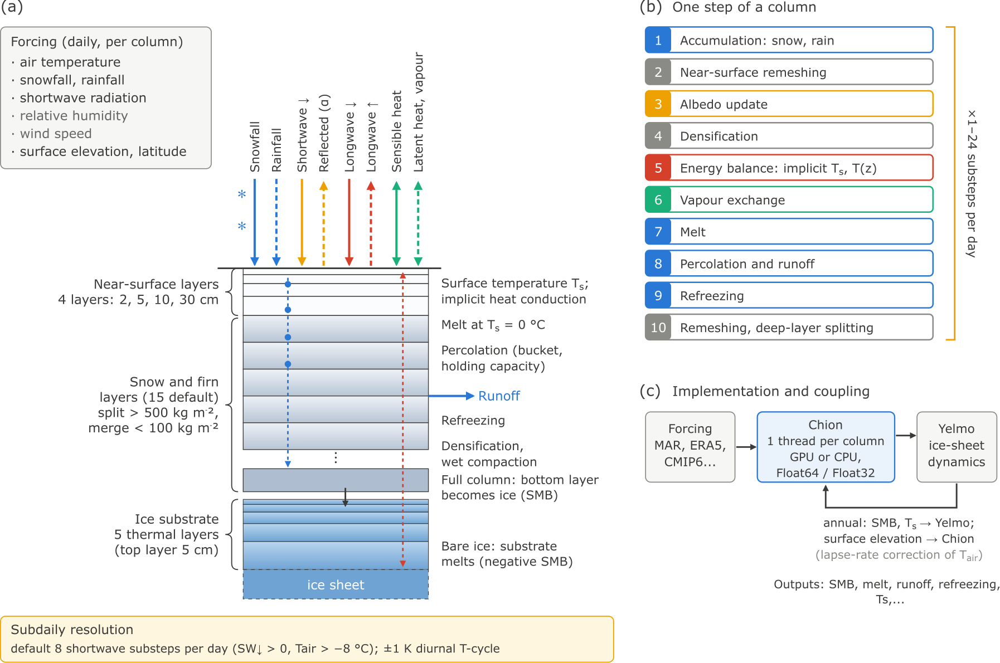

Model State And Step Flow
This page summarizes the state layout and the main execution order implemented in src/step.jl.

Schematic of the multilayer snowpack model: forcing, the layered snow and firn column with refined near-surface layers over the thermal ice substrate, and the order of processes within one time step.
State Model
A model owns its state: model.state is the evolving prognostic state, a BESSIState, PDDState or ITMState on the model's backend. initial_state(grid, params) builds the initial state on the CPU, and a model built with state = … starts from a given one (e.g. a restart). The diagnostics and scratch arrays live in model.cache, and the fields of both are forwarded (model.mass, model.thickness). cpu_state(model) returns a host copy and set_state!(model, state) copies a host state into the model.
Simulation
├── model :: BESSIModel
│ ├── grid :: Grid # ncol, optional SpatialLayout (x, y, js, is, mask),
│ │ └── layering :: Layering # Ntot, mass_max/split/min, near-surface thicknesses,
│ │ # ice substrate
│ ├── state :: BESSIState # layers (layer, column): mass, mass_w, density,
│ │ # temperature, ice_temperature; per column N, mass_base,
│ │ # smb_ice, runoff, …, Tsrf, albedo, *_sum SEB accumulators
│ ├── cache :: BESSICache # workspace (heat solve, boundary_enthalpy), thickness,
│ │ # wet_mass, bulk_density, liquid_water, active columns
│ ├── params :: Params # constants and schemes (see Parameters)
│ └── forcing :: AtmosphericForcing # Forcing source, loaded year (host data, kernel fields)
├── clock :: Clock # year index, step, iteration, time
├── years, spinup, output # what run! does (OutputConfig: run directory, outputs)
└── io # output recorders, spin-up done, wall timeFor BESSIState, each column stores one active-layer count N[idx] together with layer-wise arrays for:
| Field | Meaning | Units |
|---|---|---|
mass | solid snow / firn / ice mass per layer | kg m^-2 |
mass_w | retained liquid water mass per layer | kg m^-2 |
density | bulk snow density per layer | kg m^-3 |
temperature | layer temperature | K |
mass_base | exported basal ice mass | kg m^-2 |
smb_ice | cumulative net mass forcing to the ice sheet | kg m^-2 |
runoff | cumulative liquid-water export | kg m^-2 |
melt | cumulative melted solid mass | kg m^-2 |
refreezing | cumulative refrozen liquid mass | kg m^-2 |
vapor_mass | cumulative net vapour exchange (deposition and condensation positive) | kg m^-2 |
sublimation | cumulative sublimated mass | kg m^-2 |
latent_heat_flux_sum | time-integrated latent heat-flux diagnostic | W m^-2 day |
shortwave_down_sum, shortwave_net_sum | time-integrated shortwave down and absorbed | W m^-2 day |
longwave_down_sum, longwave_net_sum | time-integrated longwave down and net | W m^-2 day |
sensible_heat_flux_sum, rain_heat_flux_sum | time-integrated sensible heat and rain heat | W m^-2 day |
Tsrf | snow–air (or ice–air) interface temperature | K |
albedo | surface albedo used by the energy solver | 1 |
snow_age_days | time since the last snowfall (AgingAlbedo) | day |
w_snow_max | seasonal maximum snow water equivalent (SemixAlbedo) | kg m^-2 |
ice_temperature | temperatures of the ice-substrate layers, (ice_substrate_layers, column) | K |
The cache holds the column diagnostics thickness (m), wet_mass (kg m⁻²), bulk_density (kg m⁻³) and liquid_water (kg m⁻²), refreshed by update_diagnostics! (which run! calls at the end of every run), and the scratch arrays of the heat solve with the cumulative boundary_enthalpy (J m⁻²) of the enthalpy budget. column_profile(model, idx) returns the active layers of one column, and column_enthalpy(model, idx) its enthalpy.
The surface energy balance sums are positive into the surface. Under snow and on the ice substrate the terms are evaluated at the solved surface temperature, on bare ice without a substrate at T0. Net shortwave, net longwave, sensible, latent and rain heat add up to the energy into the column (melt and conduction), up to the linearization of the solve and the heat of snowfall, which is not among them.
PDDState stores snowpack_swe, smb_ice, runoff, and pdd_sum as column vectors. Its snow reservoir is capped by H_snow_max of PDDParams. Refrozen water leaves that reservoir as superimposed ice, and smb_ice therefore contains only snow-to-ice conversion minus ice melt. For every PDD step, precipitation is partitioned according to snowfall + rainfall = Δsnowpack_swe + Δsmb_ice + Δrunoff.
SnowpackForcing stores one forcing matrix per field in model-native units (K, kg m^-2 s^-1, W m^-2). Its constructor also accepts user-facing temperature and precipitation fields in Celsius and mmWE day^-1.
Host/device boundary
Before a KernelAbstractions launch, Chion extracts concrete named tuples containing only the arrays required by that kernel, and passes the isbits Params and Layering for inline dispatch on the schemes. Complete state, forcing, model and simulation objects are not kernel arguments.
Every launch uses an ndrange equal to the active-index or output length. Kernel entry points index that range directly under @inbounds; empty work sets are handled and validated on the host before launch.
Step Ordering
With the default diurnal substeps (DiurnalSubsteps()), a daily forcing step is first split into substeps (see Diurnal Shortwave Cycle); with the default longwave_scheme = CloudProxyLongwave(), the incident longwave is derived once from the daily forcing before that split. Each substep then executes, for a snow-covered column:
- accumulation and rainfall input; snow falling on a previously bare surface takes $\min(T_{\mathrm{air}}, T_0)$; layers emptied below a trace threshold are removed and their water runs off
- near-surface remeshing to the
near_surface_layer_max_thicknesses_mprofile - albedo update
- densification
- energy solve of the snow column and the ice substrate
- turbulent vapour exchange (sublimation/deposition, or evaporation/ condensation at the melting point) on the surface layer
- melt, when the energy solve diagnoses melt energy; melt in excess of the snow melts the underlying ice and runs off
- percolation
- HTESSEL liquid-water compaction, with
HTESSELDensification()and liquid water remains - refreezing
- near-surface remeshing again, so that the next energy solve sees the prescribed thin top layers, and the final albedo/snow-age update
If a column has no snow after accumulation, the column step takes the bare-ice branch and skips the snow-column process chain. With an ice substrate (the default), the energy solve runs on the substrate with the top substrate layer as the surface; bare ice cools and must re-warm before melting, and melt and rain run off. Without a substrate (Layering(ice_substrate_layers = 0)), bare ice is held at the melting point and positive surface energy is converted directly into SMB loss.
For BESSI, smb_ice is the cumulative mass transferred to the ice-sheet reservoir through basal export and bare-ice surface mass changes. Monthly NetCDF smb_ice is the change in that cumulative field during the month.
Important Defaults
The layering defaults (Layering):
Ntot = 15mass_max = 500 kg m^-2mass_split = 300 kg m^-2mass_min = 100 kg m^-2near_surface_layer_max_thicknesses_m = (0.02, 0.05, 0.10, 0.30)ice_substrate_layers = 5,ice_substrate_top_thickness_m = 0.05
and of the parameters (Params):
ConstantFreshSnowDensity(density = 315)kg m⁻³T0 = 273.15 K
The surface-energy defaults (SemixSurfaceEnergyBalance(), DynamicAlbedo() with alpha_dry, alpha_wet, alpha_ice = 0.81, 0.70, 0.40, CloudProxyLongwave(), SemixTurbulentFluxes() with sensible heat factor 3.0 and stable coefficient 40, DiurnalSubsteps() with 8 substeps and a 1 K temperature cycle) were calibrated against MAR v3.14.3 over Greenland with daily forcing. All values are listed on Parameters.
Entry Points
Most users run a Simulation with run! (see Running Simulations). Coupled workflows advance it with time_step! or yearly_step! and change the inputs in between (see Models And Coupling). integrate!(model, steps) steps a model without a Simulation. Every path ends in column_step!, which advances one column by one forcing step and is the function inlined into the GPU kernel.
Chion.BESSIState — Type
struct BESSIState{NI<:AbstractVector{<:Integer}, MT<:AbstractMatrix, VT<:AbstractVector}Prognostic state of a BESSIModel: the snow and firn layers (layer, column) (on a GPU stored (column, layer) for coalesced access, see TransposedLayerMatrix), the ice-substrate temperatures, and per column the number of active layers, the cumulative mass fluxes (kg m⁻²), the time-integrated surface energy balance (W m⁻² day, positive into the surface) and the surface properties.
Fields
N::AbstractVector{<:Integer}: number of active snow and firn layersmass::AbstractMatrix: solid mass of the layers (kg m⁻²)mass_w::AbstractMatrix: liquid water of the layers (kg m⁻²)density::AbstractMatrix: density of the layers (kg m⁻³)temperature::AbstractMatrix: temperature of the layers (K)ice_temperature::AbstractMatrix: temperature of the ice-substrate layers (K)mass_base::AbstractVector: firn mass passed to the ice below (kg m⁻², cumulative)smb_ice::AbstractVector: net mass forcing of the ice sheet (kg m⁻², cumulative)runoff::AbstractVector: runoff (kg m⁻², cumulative)melt::AbstractVector: melt (kg m⁻², cumulative)refreezing::AbstractVector: refreezing (kg m⁻², cumulative)vapor_mass::AbstractVector: net vapour exchange, deposition positive (kg m⁻², cumulative)sublimation::AbstractVector: sublimation (kg m⁻², cumulative)latent_heat_flux_sum::AbstractVector: latent heat flux (W m⁻² day, cumulative)shortwave_down_sum::AbstractVector: shortwave down (W m⁻² day, cumulative)shortwave_net_sum::AbstractVector: absorbed shortwave (W m⁻² day, cumulative)longwave_down_sum::AbstractVector: longwave down (W m⁻² day, cumulative)longwave_net_sum::AbstractVector: net longwave (W m⁻² day, cumulative)sensible_heat_flux_sum::AbstractVector: sensible heat flux (W m⁻² day, cumulative)rain_heat_flux_sum::AbstractVector: heat of rain (W m⁻² day, cumulative)Tsrf::AbstractVector: surface temperature (K)albedo::AbstractVector: surface albedo (–)snow_age_days::AbstractVector: time since the latest snowfall,AgingAlbedo(day)w_snow_max::AbstractVector: seasonal maximum of the snow water equivalent,SemixAlbedo(kg m⁻²)
Chion.PDDState — Type
struct PDDState{ST<:AbstractVector{<:Real}}State of a PDDModel: the snow reservoir and the cumulative mass fluxes (mm w.e.).
Fields
snowpack_swe::AbstractVector{<:Real}: snow water equivalent (mm w.e.)smb_ice::AbstractVector{<:Real}: net mass forcing of the ice sheet (mm w.e., cumulative)runoff::AbstractVector{<:Real}: runoff (mm w.e., cumulative)pdd_sum::AbstractVector{<:Real}: positive degree days (K day, cumulative)
Chion.ITMState — Type
struct ITMState{ST<:AbstractVector{<:Real}}State of an ITMModel. The instantaneous budget fields are in ITM's native mm w.e. day⁻¹; the cumulative fields (*_cum, smb_ice) in mm w.e.
Fields
H_snow::AbstractVector{<:Real}: snow water equivalent (mm w.e.)alb_s::AbstractVector{<:Real}: surface albedo (–)smb::AbstractVector{<:Real}: surface mass balance (mm w.e. day⁻¹)smbi::AbstractVector{<:Real}: ice-sheet mass balance (mm w.e. day⁻¹)melt::AbstractVector{<:Real}: melt (mm w.e. day⁻¹)runoff::AbstractVector{<:Real}: runoff (mm w.e. day⁻¹)refreezing::AbstractVector{<:Real}: refreezing (mm w.e. day⁻¹)Tsrf::AbstractVector{<:Real}: surface temperature (K)melt_net::AbstractVector{<:Real}: net melt (mm w.e. day⁻¹)smb_cum::AbstractVector{<:Real}: surface mass balance (mm w.e., cumulative)smb_ice::AbstractVector{<:Real}: ice-sheet mass balance (mm w.e., cumulative)melt_cum::AbstractVector{<:Real}: melt (mm w.e., cumulative)runoff_cum::AbstractVector{<:Real}: runoff (mm w.e., cumulative)refreezing_cum::AbstractVector{<:Real}: refreezing (mm w.e., cumulative)
Chion.initial_state — Function
initial_state(grid, params) -> BESSIState | PDDState | ITMStateInitial state of the columns of grid on the CPU: no snow, the initial density and temperature of params (a Params), or the initial bulk state for PDDParams and ITMParams.
Chion.BESSICache — Type
mutable struct BESSICache{W<:Chion.ColumnarStepWorkspace, V<:AbstractVector, A<:AbstractVector{Int64}}Diagnostic and scratch arrays of a BESSIModel and the columns that are stepped.
Fields
workspace::Chion.ColumnarStepWorkspace: scratch of the column step (heat solve) and the cumulativeboundary_enthalpy(J m⁻²)thickness::AbstractVector: snow and firn depth (m), fromupdate_diagnostics!wet_mass::AbstractVector: solid plus liquid mass of the snow and firn (kg m⁻²), fromupdate_diagnostics!bulk_density::AbstractVector: bulk density of the snow and firn (kg m⁻³), fromupdate_diagnostics!liquid_water::AbstractVector: liquid water in the snow and firn (kg m⁻²), fromupdate_diagnostics!active::Vector{Bool}: stepped columns (host)active_indices::AbstractVector{Int64}: indices of the stepped columns, on the model's backend
Chion.BulkCache — Type
mutable struct BulkCache{A<:AbstractVector{Int64}}The columns that a bulk model (PDDModel, ITMModel) steps.
Fields
active::Vector{Bool}: stepped columns (host)active_indices::AbstractVector{Int64}: indices of the stepped columns, on the model's backend
Chion.AtmosphericForcing — Type
mutable struct AtmosphericForcing{S<:Forcing}The forcing of a model: its Forcing source and the loaded calendar year, as the host SnowpackForcing data and the kernel view fields on the model's backend in the model's number type. update_forcing! loads another year.
Fields
source::Forcing: where the forcing comes from, one calendar year at a timeyear::Int64: the loaded calendar yeardata::SnowpackForcing: the loaded year on the hostfields::Union{Chion.ITMForcing, Chion.PDDForcing, NamedTuple}: the loaded year as the kernels read it, on the model's backend
Chion.update_diagnostics! — Function
update_diagnostics!(model::BESSIModel)Recompute the column diagnostics thickness, wet_mass, bulk_density and liquid_water of the cache from the layers. run! calls it at the end of every run.
Chion.column_profile — Function
column_profile(model::BESSIModel, idx = 1) -> NamedTupleThe active layers of column idx (host copies): N, mass, mass_w, density, temperature, thickness (m), and the column's albedo, Tsrf and smb_ice.
Chion.column_enthalpy — Function
column_enthalpy(model, idx)Enthalpy (J m⁻²) of the snow/firn column and the ice substrate of column idx, relative to liquid water at T₀: solid mass contributes cᵢ m (T − T₀) − Lₘ m, liquid water (held at T₀) contributes nothing, and the fixed-mass substrate contributes its sensible heat only. Its change over a step equals the change of the workspace diagnostic boundary_enthalpy.
Chion.column_step! — Function
column_step!(fields, params, layering, boundary, idx, forcing, workspace)Advance column idx of the state arrays fields (get_fields(model.state)) by one forcing step with the step forcing forcing, the Params params, the Layering layering and the scratch arrays workspace. Mutates fields and workspace in place. The diurnal cycle of params selects one call of column_step_core! or up to max_substeps of them.